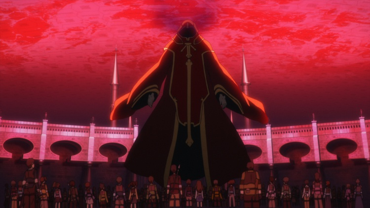

SAOMD · OFFLINE STORY COLLECTION
刀剑神域
Memory Defrag
中文／English · 剧情、插图与原声

01 / 剧情阅读
从主线开始
按章节阅读；也可切换角色、活动、教程与独立片段。支持标题与角色检索。
02 / 插图画廊看看故事里的画面
插图、背景、道具和角色立绘分类浏览，可从图片返回引用它的剧情步骤。
03 / 纯文案中文译稿 · Markdown
独立分类文案、角色资料与文本附录，共 881 份中文 Markdown；另保留全部英文原文。
39主线章节4,953剧情片段120,571已译剧情正文1,181剧情插图306剧情背景5,816角色立绘
中文采用机器翻译，统一角色名与术语，并做模型抽校；非官方译文，未经人工逐句审校。英文原文完整保留，阅读页可切换对照。少数缺乏可靠译名的原创人物保留罗马字，图片中的文字保持原图。插图按脚本引用关联；角色立绘按原图层和坐标合成。网页展示静态图文，镜头、移动与过渡动画没有重新合成为游戏演出。未找到引用的包内插图也单独保留。